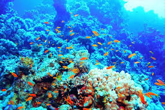

活動内容
実績
アクセス
コワーキング
コワーキング
新着スライド
Deep Learning のための Multi Layer Perceptron
Qiita最新記事
(数学的基礎から学ぶ Deep Learning with Python; MPS Yokohama Deep Learning Series)
新着動画

Github最新記事
作者：mpsamurai/qiita-analyzer
題：qiita-analyzerQiita の記事を分析するモジュール
コード
Morning Project Samurai (MPS) は、メンバ一人一人が「主体的」に「世の中の役に立つソフトウェア開発プロジェクト」を提案し、
「リーダーとなる機会を持つことのできる環境」を作ります。
MPSリンク
ここをクリックしてください